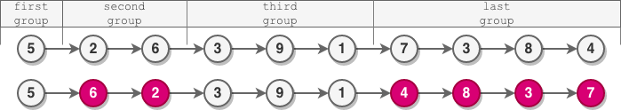
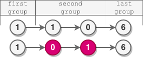
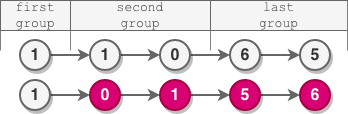

| Category | Difficulty | Likes | Dislikes |
|---|---|---|---|
| Algorithms | Medium | 855 | 373 |
josh-technology | nutanix | bloomberg | zopsmart
You are given the head of a linked list.
The nodes in the linked list are sequentially assigned to non-empty groups whose lengths form the sequence of the natural numbers (1, 2, 3, 4, ...). The length of a group is the number of nodes assigned to it. In other words,
1st node is assigned to the first group.2nd and the 3rd nodes are assigned to the second group.4th, 5th, and 6th nodes are assigned to the third group, and so on.Note that the length of the last group may be less than or equal to 1 + the length of the second to last group.
Reverse the nodes in each group with an even length, and return the head of the modified linked list.
Example 1:

Input: head = [5,2,6,3,9,1,7,3,8,4]
Output: [5,6,2,3,9,1,4,8,3,7]
Explanation:
- The length of the first group is 1, which is odd, hence no reversal occurs.
- The length of the second group is 2, which is even, hence the nodes are reversed.
- The length of the third group is 3, which is odd, hence no reversal occurs.
- The length of the last group is 4, which is even, hence the nodes are reversed.Example 2:

Input: head = [1,1,0,6]
Output: [1,0,1,6]
Explanation:
- The length of the first group is 1. No reversal occurs.
- The length of the second group is 2. The nodes are reversed.
- The length of the last group is 1. No reversal occurs.Example 3:

Input: head = [1,1,0,6,5]
Output: [1,0,1,5,6]
Explanation:
- The length of the first group is 1. No reversal occurs.
- The length of the second group is 2. The nodes are reversed.
- The length of the last group is 2. The nodes are reversed.
Constraints:
[1, 105].0 <= Node.val <= 105